07-Filter_Listener_Ajax
这块知识点比较杂，而且Ajax是代替jsp的前端技术，了解即可。
Filter&Listener&Ajax
Filter
Filter表示过滤器，是 JavaWeb 三大组件(Servlet、Filter、Listener)之一。Servlet 我们之前都已经学习过了，Filter和Listener我们今天都会进行学习。过滤器可以把对资源的请求拦截下来，从而实现一些特殊的功能。
正常情况下浏览器可以访问服务器上的所有的资源，而在访问到这些资源之前可以使过滤器拦截来下，也就是说在访问资源之前会先经过 Filter：
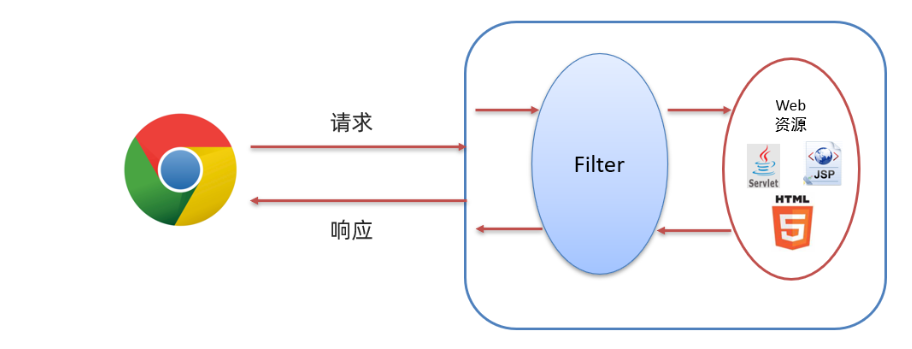过滤器一般完成一些通用的操作：比如每个资源都要写一些代码完成某个功能，我们总不能在每个资源中写这样的代码，而此时我们可以将这些代码写在过滤器中，因为请求每一个资源都要经过过滤器。
我们之前做的品牌数据管理就已经做了登录的功能，但不登录的时候也可以通过首页的超链接访问到全部数据，这显然不符合我们的要求。我们希望如果登录过就跳转到品牌数据展示的页面，没有登录就跳转到登录界面，但如果要实现这个效果就要在每个资源中写上这段逻辑。像这种通用的操作，就可以用过滤器来实现，这就是过滤器的权限控制。
Filter快速开发
定义类，实现Filter接口，并重写其中的所有方法；
配置Filter拦截资源的路径：在类上定义
@WebFilter注解。而注解的value属性值/*表示拦截所有的资源；在doFilter方法中执行通用业务，并放行（
chain.doFilter(req,resp);就是放行，也就是让其访问本该访问的资源）
1 |
|
Filter执行流程
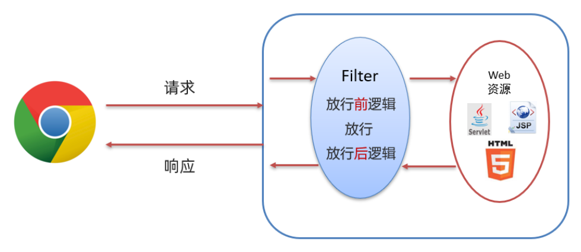可以总结Filter的执行流程如下：
以后我们可以将对请求进行处理的代码在放行之前进行处理，而如果请求完资源后还要对响应的数据进行处理时可以在放行后进行处理。
Filter拦截路径配置
拦截路径表示 Filter 会对请求的哪些资源进行拦截，使用 @WebFilter 注解进行配置。
- 拦截具体的资源：
/index.jsp：只有访问index.jsp时才会被拦截； - 目录拦截：
/user/*：访问/user下的所有资源，都会被拦截； - 后缀名拦截：
*.jsp：访问后缀名为jsp的资源，都会被拦截； - 拦截所有：
/*：访问所有资源，都会被拦截。
过滤器链
指在一个Web应用，可以配置多个过滤器，这多个过滤器称为过滤器链。
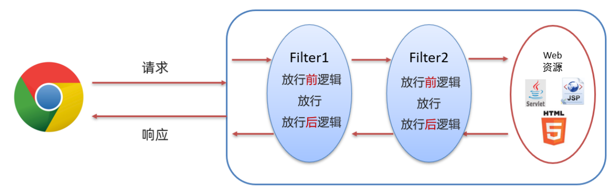在FilterDemo01中：
1 | System.out.println("1.FilterDemo..."); |
在FilterDemo2中：
1 | System.out.println("2.FilterDemo..."); |
在服务器动态资源hello.jsp中：
1 | <% |
访问服务器中的jsp资源，可以根据打印的信息看到web请求和响应是如何通过过滤器链执行的：
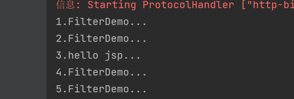但是为什么，我们配置的
FilterDemo1和FilterDemo2的拦截路径是一致的，为什么会先执行1再执行2呢？使用的是注解配置Filter，这种配置方式的优先级是按照过滤器类名（字符串）的自然排序。
Filter应用——登录校验
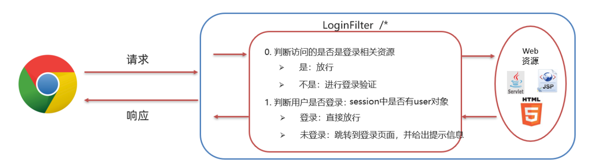这块应用在上一个projectJavaWeb_06_Cookie_Session里补充代码。在web目录下创建filter目录新建LoginFilter过滤器即可，通过判断session中是否有user对象就可以判断用户是否登录，代码很简单就不记录了。
但是我们看到的效果是这样的（先删除浏览器缓存的记录），这是为什么呢？因为登陆页面需要 css/login.css 文件进行样式渲染，但是这个文件在filter中被拦截了，导致没有加载到样式文件，为了解决这个问题，需要对所有的登陆相关的资源进行放行。还有一种情况就是当我没有用户信息时需要进行注册，而注册时也希望被过滤器放行。
过滤器LoginFilter的完整代码：
1 |
|
Listener
Listener 表示监听器，是 JavaWeb 三大组件(Servlet、Filter、Listener)之一。监听器可以监听在 application，session，request 三个对象创建、销毁或者往其中添加修改删除属性时自动执行代码的功能组件。
request和session我们学习过。而 application 是 ServletContext 类型的对象（ServletContext 代表整个web应用，在服务器启动的时候，tomcat会自动创建该对象。在服务器关闭时会自动销毁该对象）。
分类
JavaWeb 提供了8个监听器，只有 ServletContextListener 这个监听器后面会用到，ServletContextListener 是用来监听 ServletContext 对象的创建和销毁。
ServletContextListener 接口中有以下两个方法：
void contextInitialized(ServletContextEvent sce)：ServletContext对象被创建了会自动执行的方法；void contextDestroyed(ServletContextEvent sce)：ServletContext对象被销毁时会自动执行的方法。
实现
对于 ServletContextListener 监听器：
- 定义一个类，实现
ServletContextListener接口，重写所有的抽象方法 - 使用
@WebListener进行配置
1 |
|
AJAX
AJAX (Asynchronous JavaScript And XML)是异步的 JavaScript 和 XML。
AJAX概述
AJAX作用
1、与服务器进行数据交换：通过AJAX可以给服务器发送请求，服务器将数据直接响应回给浏览器。
之前我们是这样做功能：
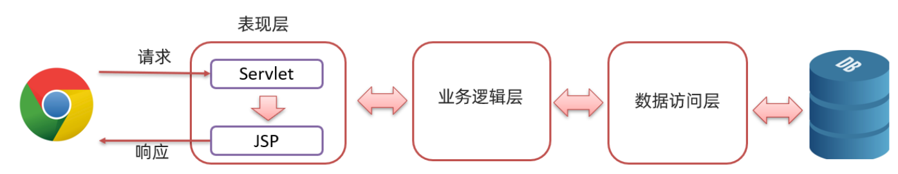
Servlet 调用完业务逻辑层后将数据存储到域对象中，然后跳转到指定的 jsp 页面，在页面上使用 EL表达式 和 JSTL标签库 进行数据的展示。
而我们学习了AJAX 后，就可以使用AJAX和服务器进行通信，以达到使用 HTML+AJAX 来替换JSP页面了。如下图，浏览器发送请求servlet，servlet 调用完业务逻辑层后将数据直接响应回给浏览器页面，页面使用 HTML 来进行数据展示。
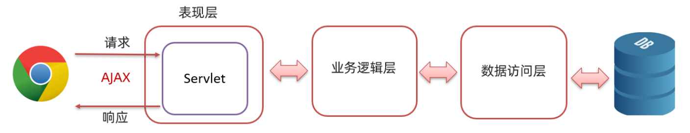
2、异步交互：可以在不重新加载整个页面的情况下，与服务器交换数据并更新部分网页的技术（搜索联想、用户名是否可用校验）。
同步和异步
- 同步发送请求
浏览器页面在发送请求给服务器，在服务器处理请求的过程中，浏览器页面不能做其他的操作。只能等到服务器响应结束后才能，浏览器页面才能继续做其他的操作。
异步发送请求过程如下
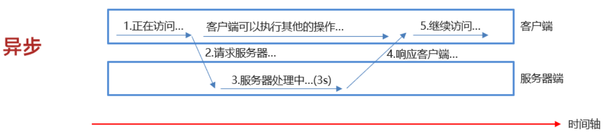
浏览器页面发送请求给服务器，在服务器处理请求的过程中，浏览器页面还可以做其他的操作。
快速入门
服务端实现
1 |
|
客户端实现
1 | <script> |
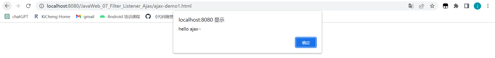
查看异步请求：
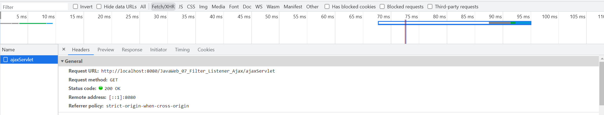
Ajax应用
需求：在完成用户注册时，当用户名输入框失去焦点时，校验用户名是否在数据库已存在。
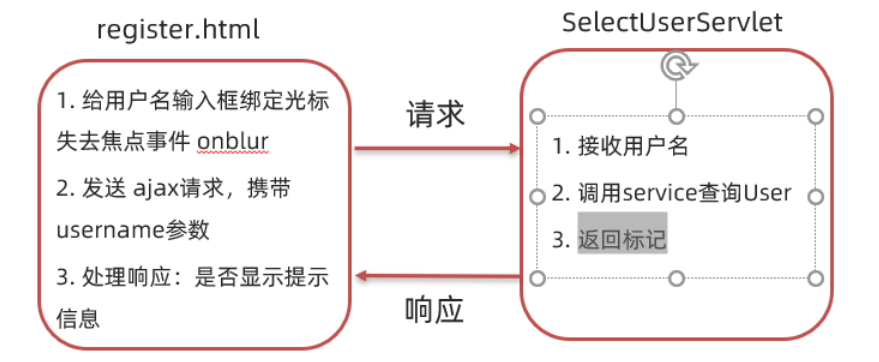后端实现
1 |
|
前端实现
1 | <script> |
Axios
Axios 对原生的AJAX进行封装，简化书写。
Axios官网：https://www.axios-http.cn
基本使用
引入 axios 的 js 文件
1
<script src="js/axios-0.18.0.js"></script>
使用axios发送请求，并获取响应结果
get请求
1
2
3
4
5
6axios({
method:"get",
url:"http://localhost:8080/ajax-demo1/aJAXDemo1?username=zhangsan"
}).then(function (resp){
alert(resp.data);
})post请求
1
2
3
4
5
6
7axios({
method:"post",
url:"http://localhost:8080/ajax-demo/axiosServlet",
data:"username=zhangsan"
}).then(function (resp) {
alert(resp.data);
})
JSON
JSON概述
JSON是JavaScript对象的表示法。
JavaScript对象的定义格式：
1
2
3
4
5{
name:"zhangsan",
age:23,
city:"北京"
}JSON格式
1
2
3
4
5{
name:"zhangsan",
age:23,
city:"北京"
}
js对象中的属性名可以使用引号（单引号或双引号）；而json格式中的键要求必须使用双引号括起来，这是 json格式的规定。
作用：由于其语法格式简单，层次结构鲜明，现多用于作为数据载体，在网络中进行数据传输。像通过response.getWriter()就是服务端给浏览器响应的数据，有些数据比较简单，如果现需要将 JAVA 对象中封装的数据响应回给浏览器的话，应该怎么做呢？
以前是通过xml进行数据传递：
1 | <student> |
json描述（ 格式数据的简单、所占的字节数少）：
1 | { |
JSON基础语法
定义格式
JSON本质就是一个字符串，但是该字符串内容是有一定的格式要求的：键要求必须使用双引号括起来，而值根据要表示的类型确定。
1 | var 变量名 = '{"key":value,"key":value,...}'; |
value的数据类型如下：数字（整数或浮点数）、字符串（双引号）、逻辑值（true或false）、数组（在方括号中）、对象（在花括号中）、null。
如果需要获取到该 JSON串中的属性值，应该怎么处理呢？
如果它是一个 js 对象，我们就可以通过 js对象.属性名 的方式来获取数据。JS 提供了一个对象JSON，该对象有如下两个方法：
parse(str)：将 JSON串转换为 js 对象。使用方式是：var jsObject = JSON.parse(jsonStr);stringify(obj)：将 js 对象转换为 JSON 串。使用方式是：var jsonStr = JSON.stringify(jsObject)
代码演示：
1 | <script> |
发送异步请求携带参数
使用 axios 发送请求时，如果要携带复杂的数据时都会以 JSON格式进行传递。可以提前定义一个 js 对象，用来封装需要提交的参数，然后使用 JSON.stringify(js对象) 转换为JSON串，再将该 JSON串作为 axios 的 data 属性值进行请求参数的提交（axios会自动将 js 对象转换为JSON串进行提交）。
1 | var jsObject = {name:"张三"}; |
发送异步请求时，如果请求参数是JSON格式，那请求方式必须是POST。因为JSON串需要放在请求体中。
JSON串和Java对象的相互转换
以后我们会以 json 格式的数据进行前后端交互。前端发送请求时，如果是复杂的数据就会以 json 提交给后端；而后端如果需要响应一些复杂的数据时，也需要以 json 格式将数据响应回给浏览器。
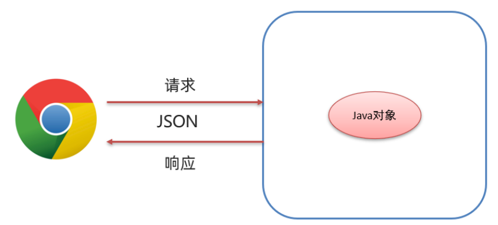在后端我们就需要重点学习以下两部分操作：
- 请求数据：JSON字符串转为Java对象；
- 响应数据：Java对象转为JSON字符串；
Fastjson 概述
阿里巴巴提供的一个Java语言编写的高性能功能完善的JSON库，可以实现 Java对象和 JSON字符串的相互转换。
基本使用
导入坐标
1
2
3
4
5<dependency>
<groupId>com.alibaba.fastjson2</groupId>
<artifactId>fastjson2</artifactId>
<version>2.0.23</version>
</dependency>JSON对象转换成Java对象
1
User user = JSON.parseObject(jsonStr, User.class);
Java对象转换成JSON对象
1
String jsonStr = JSON.toJSONString(obj);
JSON对象和Java对象的相互转换：
1 | // 将Java对象转换成Json对象 |